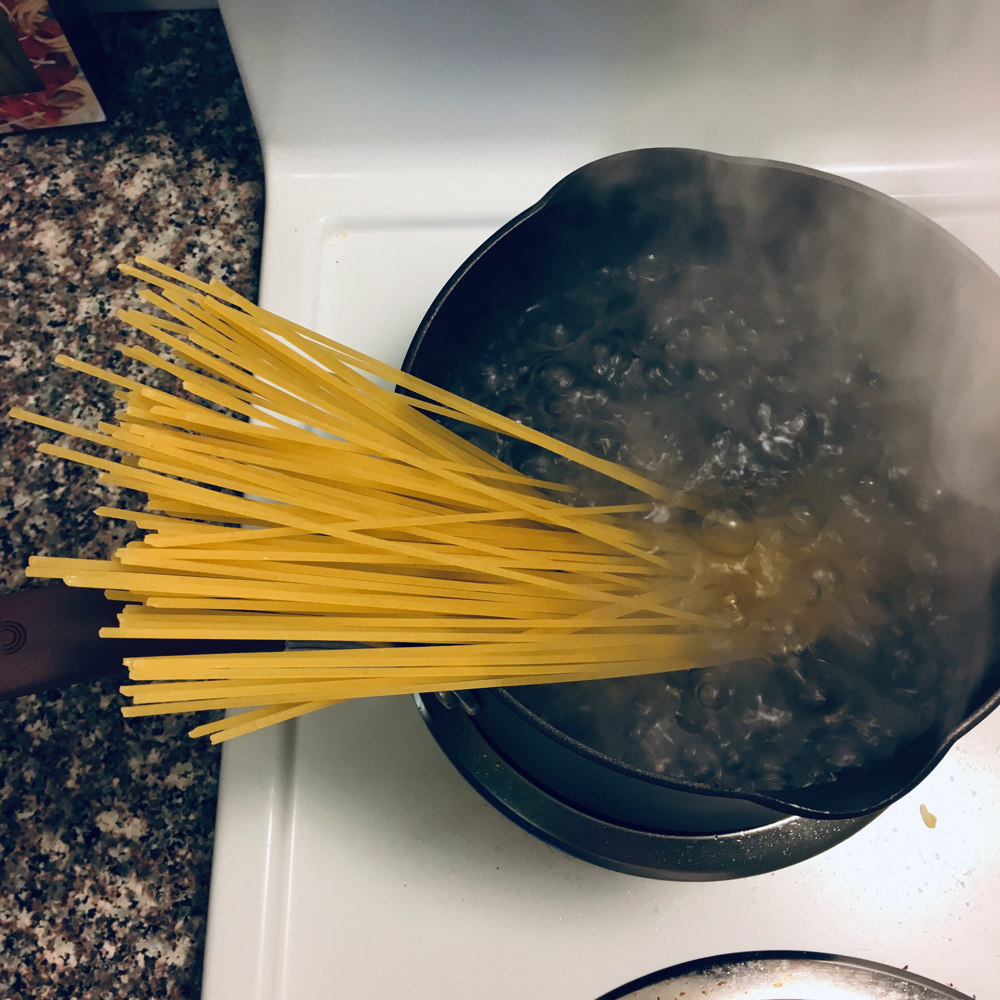
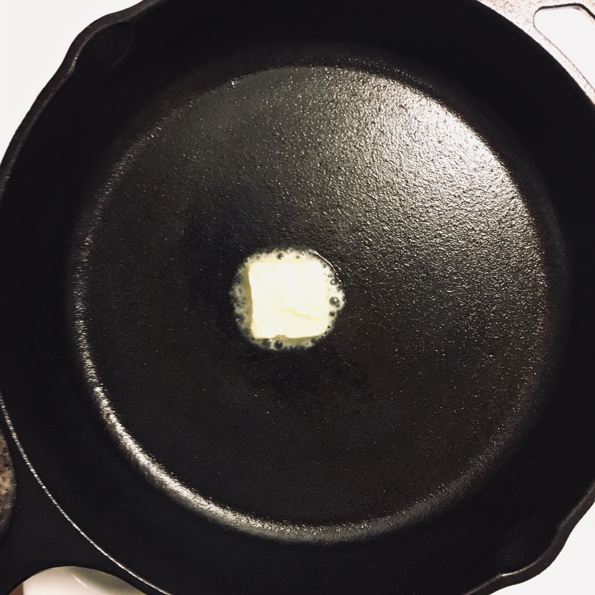
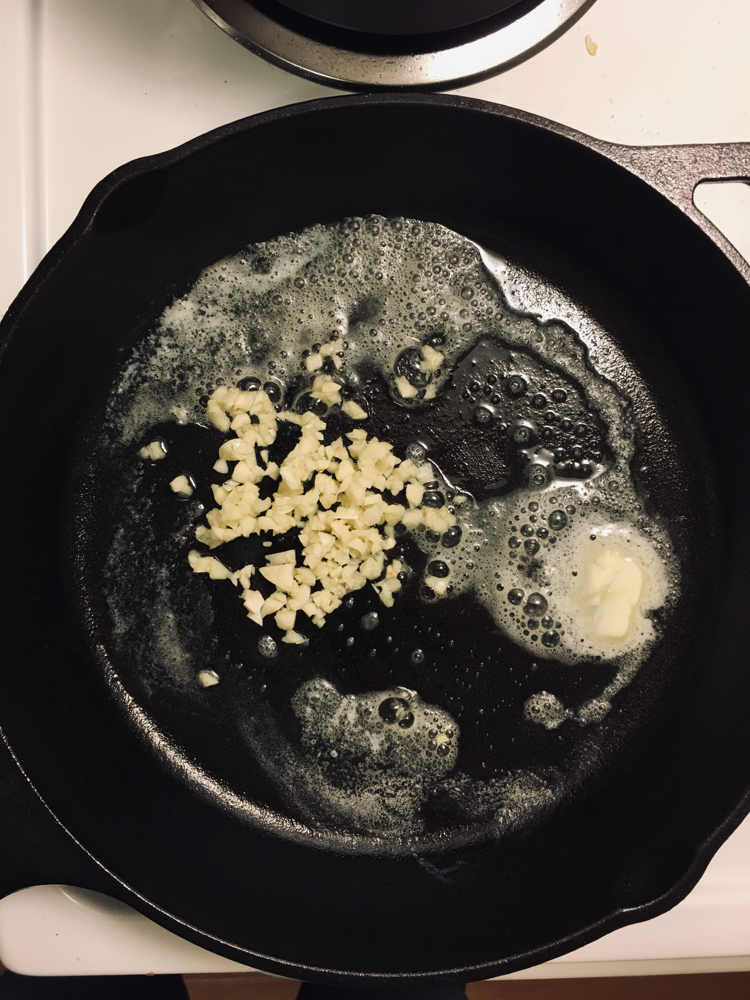
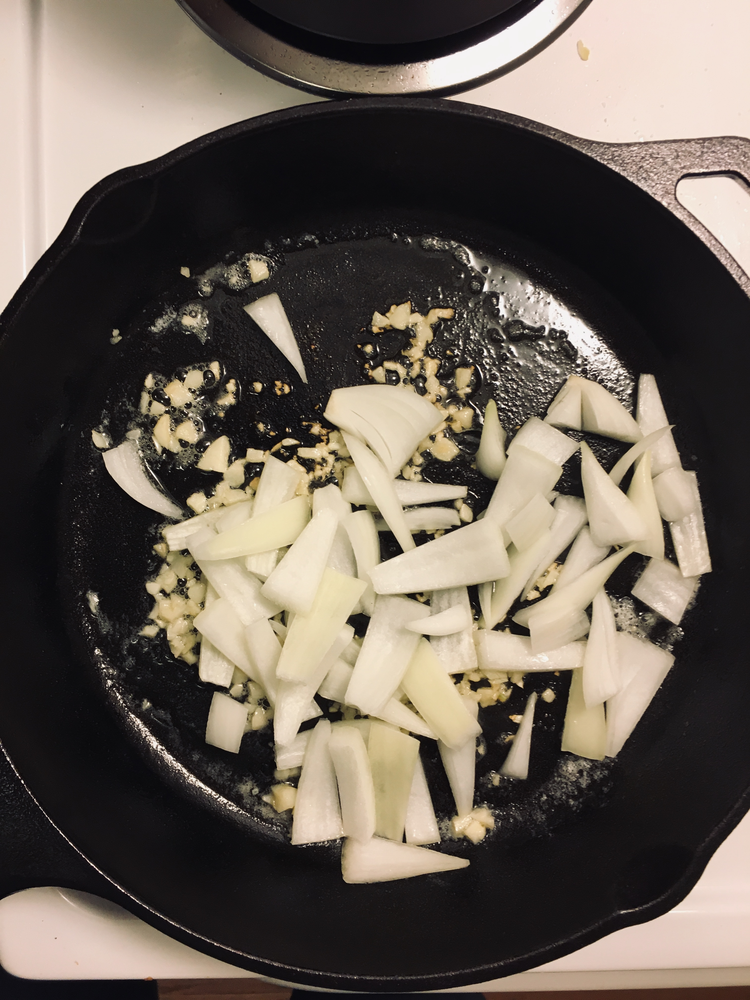
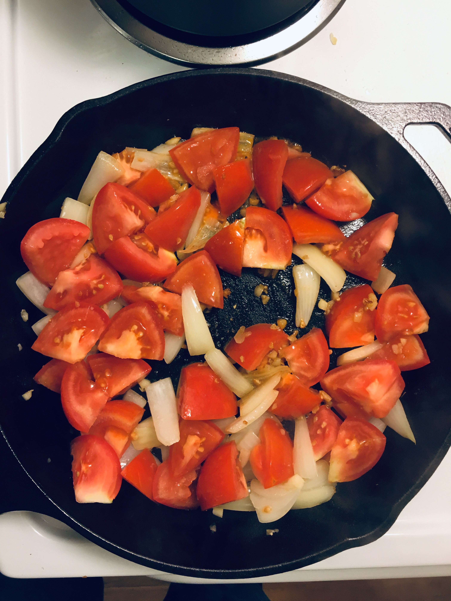
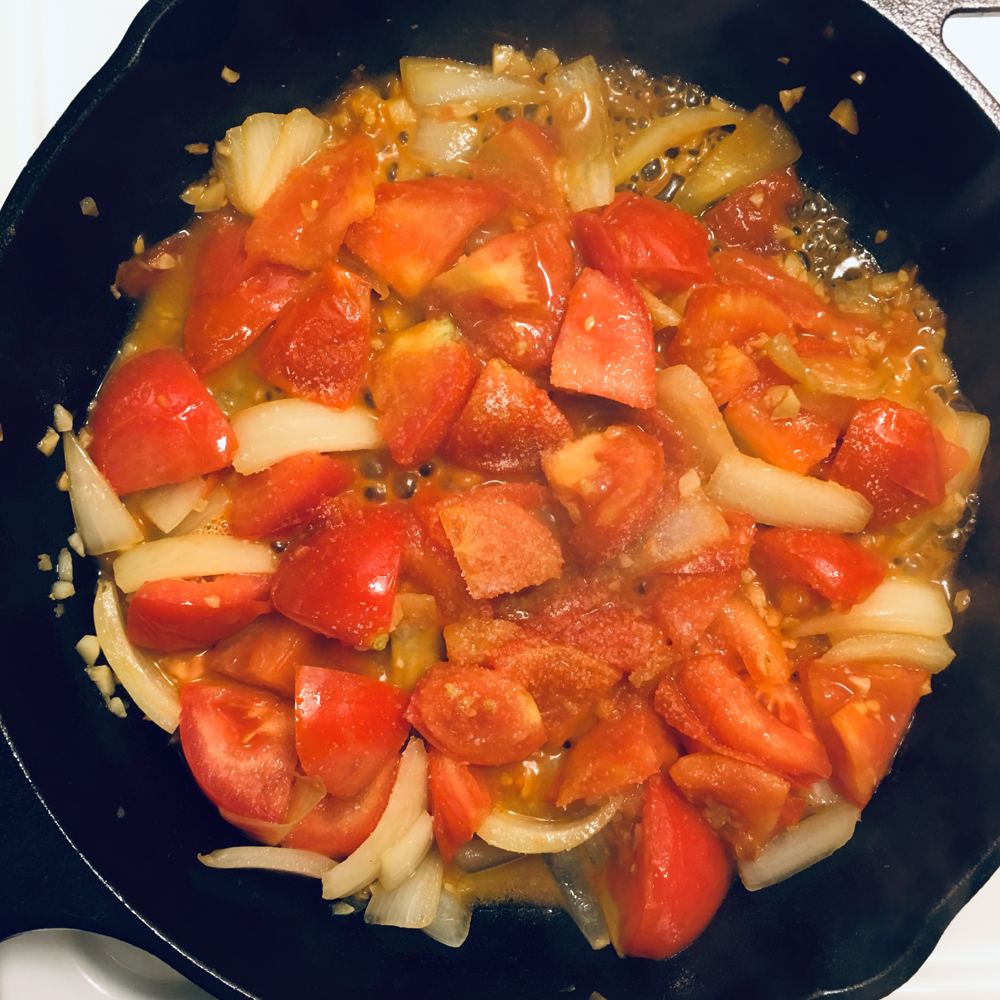
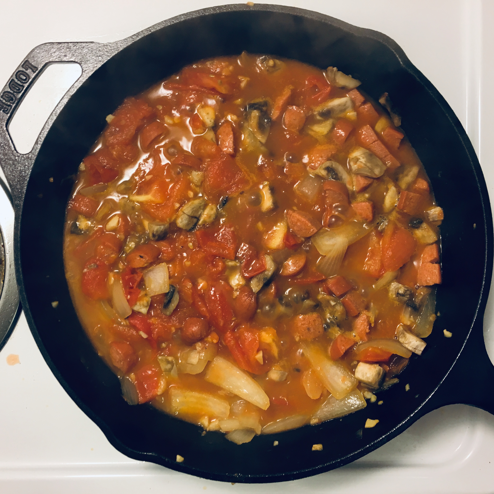
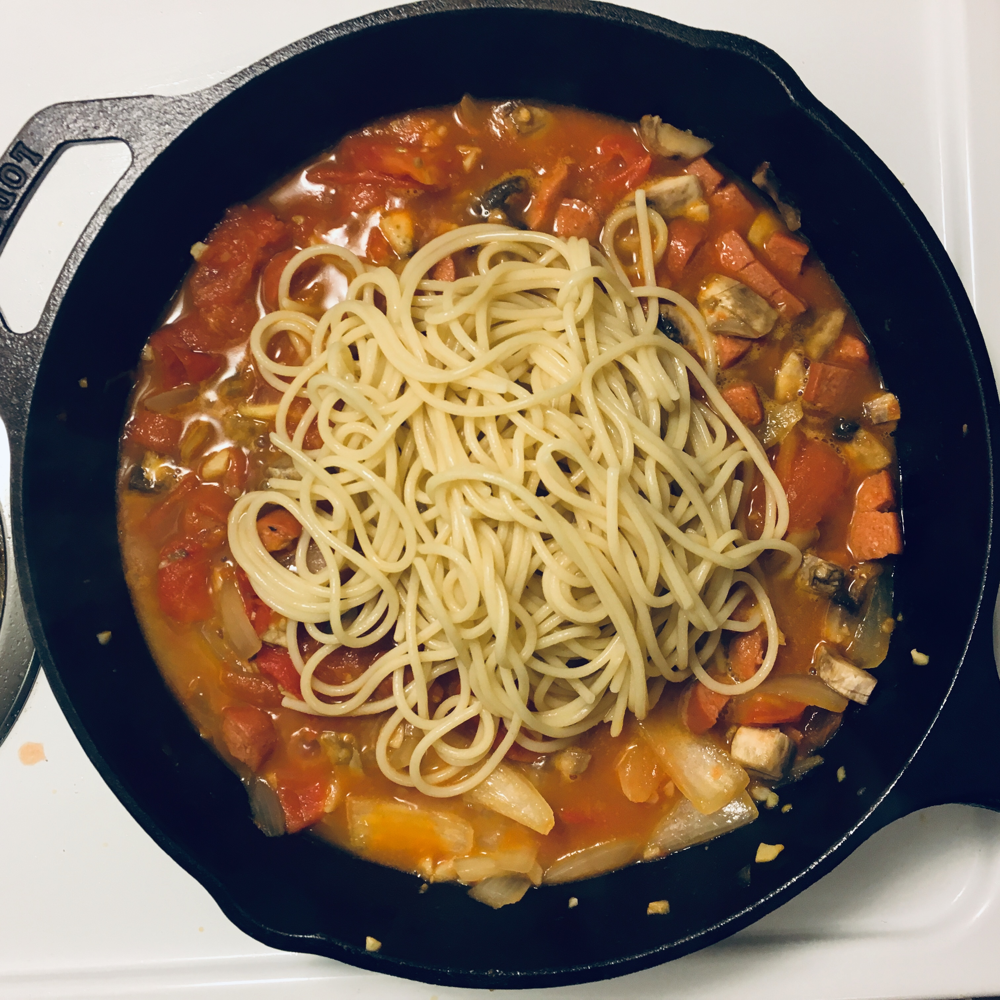
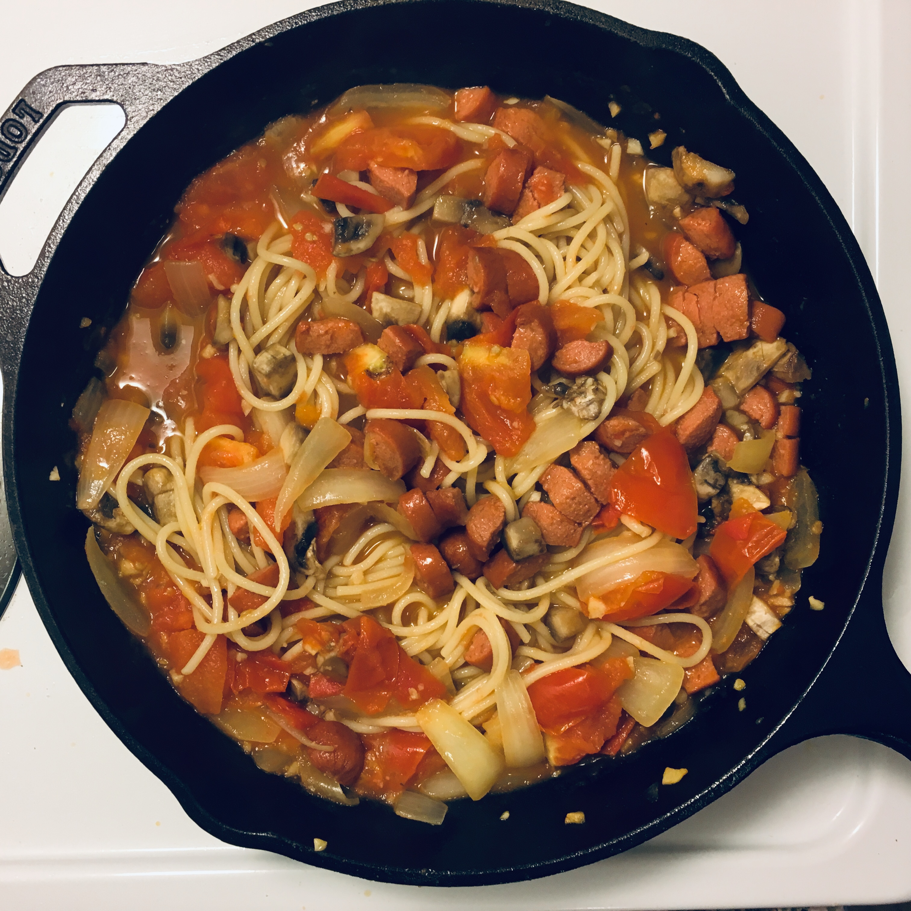

番茄意面
所需时间：约20分钟
1 材料
（一人份的用量）
- 意面：spaghetti，angel hair也行，但是可能过于软了
- 番茄：一个半超市常见的小番茄（直径约3-4厘米），或者一个常见的大番茄（直径5-7厘米）
- 洋葱：半个洋葱（直径约10厘米）
- 蘑菇
- 香肠（最好是那种汁水比较多的）
- 黄油（普通黄油或带盐都可以，橄榄油也可以）
- 蒜
- 盐
- 黑胡椒（可选）
其他可选材料
意面可以放任何东西，取决于冰箱里正好有啥：
- 土豆：半个
- 虾
- 章鱼/鱿鱼
2 简略步骤
熟练以后看简略步骤参考就好
- 烧水
- 准备食材
- 等到水开了，放入面
- 面放进去后开始做酱
- 放蒜
- 放洋葱/土豆
- 放番茄，加盐，加虾/章鱼/鱿鱼
- 番茄半软烂了加入蘑菇/香肠
- 完全烂了加入面（应该正好出锅（10-12分钟））
3 步骤
3.1 烧水
水的深度要求煮面的时候能完全没过意面。对于我的小锅（见下图），我会接15厘米深度的水。
3.2 准备食材
3.3 煮面
加入面后加盐（这个真的是随便加，使用一般的绞磨器转4-5圈左右） 沒在水里的面30秒左右就会软掉，这时候搅拌并使所有的面都沉到水面下。 照包装上的说明设定闹钟（或者直接看炉子上的时钟），我买的这款意面标注是10-12分钟。
之后要每隔几分钟搅拌一次，防止意面粘锅底。

这么多面够一个人吃，合在一起大概比一个一美分硬币的直径粗一点点。
3.4 开始做酱
热锅，火调到4/10 - 5/10档位。热到手在锅上面能明显感到热量，大概是手放在暖炉前面那种感觉。
锅热了以后加入黄油，普通的条形黄油切大约半厘米厚。放到锅里用锅铲涂抹整个锅底。 没完全融化也没关系。橄榄油也行。

放入蒜碎翻炒直到有浓烈的蒜香。注意蒜很容易在铸铁锅上粘住，需要频繁的翻动。

放入洋葱翻炒。适当翻炒几次就可以进行下一步。

等到洋葱差不多半透明并且变软了，加入番茄，翻炒。

加盐并翻动，加到尝起来有明显咸味。

等番茄有点烂了，加入蘑菇/章鱼/鱿鱼。

如果水有点少，，可以加一点点。水的多少取决于你想要的稠度， 这道意面没有加奶油/番茄酱，不会像平时吃的那种意面一样稠。 加水的量取决于番茄，有的番茄出水多就不用加，有的需要加一些。 注意等番茄烂了以后再决定加不加水。
（想象水）
准备出锅前加入香肠即可，毕竟香肠本来就是熟的，啥时候加都一样。
3.5 面煮好的时候
关火，加面，搅拌。喜欢黑胡椒可以加一些。我感觉起司加不加都差不多，喜欢的可以撒一些。
 
3.6 吃
可以直接把锅端到桌上吃。别忘了垫一块毛巾。